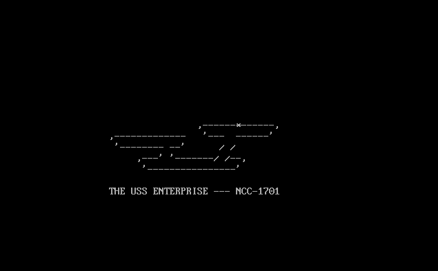
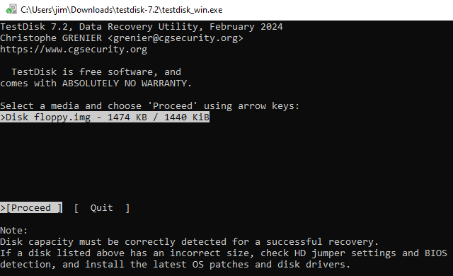
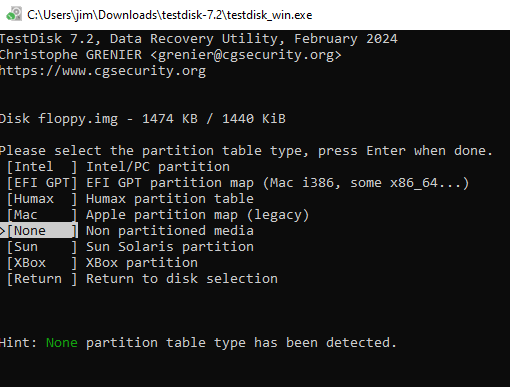
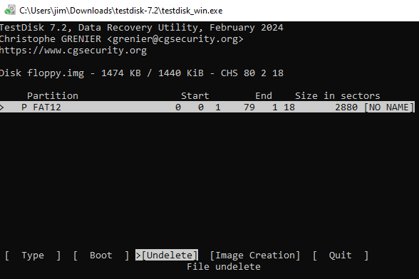
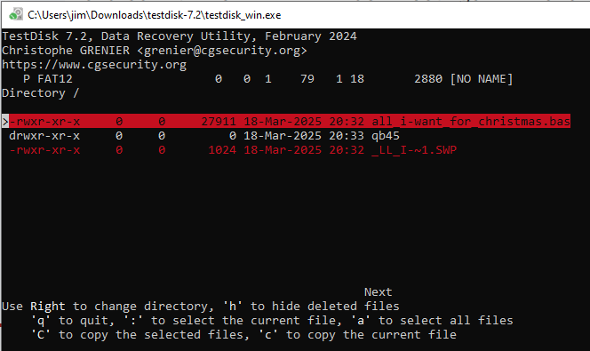
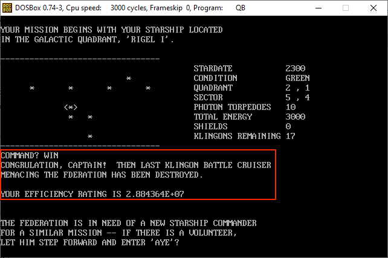

Retro Recovery

Digital archaeology meets arcade nostalgia in this investigation of a forgotten 1980s floppy disk. We dive into raw hex bytes to recover a deleted masterpiece and rewrite its source code to force an impossible victory.
Challenge Overview
The challenge begins with a raw disk image labeled floppy.img found under an old arcade cabinet. A forensic scan reveals a QuickBasic environment and traces of deleted data that the previous owner left behind. We must employ file recovery techniques to restore the missing source code and reveal the secrets hidden within the unallocated space.
Background Info: What is QuickBasic?
QuickBasic is a programming environment and compiler developed by Microsoft in the 1980s. It was widely used for creating DOS applications and is known for its simplicity and ease of use.
Phase 1: Artifact Recovery
The initial analysis of the FAT12 file system showed a standard DOS boot disk containing QB.EXE.
However, the challenge description hinted at deleted files. I used a program called
TestDisk to scan the image and discovered a
deleted QuickBasic file, all_i-want_for_christmas.bas.
Deep Dive: TestDisk Recovery Process
Run with testdisk_win.exe floppy.img. Enter to proceed with the floppy.img file.

Choose None for the partition table type.

Select Undelete.

Select the file all_i-want_for_christmas.bas, type c to
copy the file to a directory of your choice.

Side Note: Other Undelete Techniques
There are several other tools and techniques for recovering deleted files from FAT12 file systems, including:
- The Sleuth Kit (TSK): https://www.sleuthkit.org/sleuthkit/
- Autopsy: https://www.autopsy.com/
- Manual Hex Editing: Using a hex editor to manually locate and recover deleted file entries in the FAT table.
Side Note: Nano Swap File
There was another deleted file found, a Nano swap file, _LL_I-~1.SWP.
Swap files are temporary files created by text editors like Nano to store unsaved changes. They can sometimes contain fragments of deleted or unsaved files.
Strings revealed the following:
- nano 7.2 - version of the editor
- mark - username
- arcade - hostname
- all_i-want_for_christmas.bas - original filename
$ strings _LL_I-~1.SWP
b0nano 7.2
mark
arcade
all_i-want_for_christmas.bas
Phase 2: The Flag
Scanning the recovered file for anomalies, I located a comment in Line 211 containing a Base64
string: bWVycnkgY2hyaXN0bWFzIHRvIGFsbCBhbmQgdG8gYWxsIGEgZ29vZCBuaWdodAo=
Decoding this string yielded the flag
$ echo bWVycnkgY2hyaXN0bWFzIHRvIGFsbCBhbmQgdG8gYWxsIGEgZ29vZCBuaWdodAo= | base64 -d
merry christmas to all and to all a good night
Background Info: What is Base64 Encoding?
Base64 is a binary-to-text encoding scheme that represents binary data in an ASCII string format by translating it into 64 characters:
- 26 uppercase letters (A-Z)
- 26 lowercase letters (a-z)
- 10 digits (0-9)
- 2 special characters (+ and /)
It is commonly used to encode data that needs to be stored and transferred over media that are designed to deal with textual data. This ensures that the data remains intact without modification during transport.
It can also be decoded using a website such as CyberChef or an online Base64 decoder.
Side Note: Winning the Game
While finding the flag was the primary objective, an extra challenge was to run the recovered artifact. I mounted the image using DOSBox (a DOS emulator) and launched the QuickBasic environment. The game is a fully functional version of Super Star Trek, but playing a full simulation takes hours.
To secure an immediate victory, I hacked the source code. By adding the following line, I created a backdoor that triggers a win.
2065 IF A$="WIN" THEN T=T+0.1: GOTO 6370Deep Dive: Running the Game in DOSBox
To run the recovered QuickBasic game, here are the steps I followed:
Z:\ mount c c:\temp\ (path to extracted files) Z:\>c: C:\>cd QB45 C:\QB45\qb.exe

If you don't want to install DOSBox, you can use a browser based emulator, DOS Wasm X. Simply upload a zip with the floppy.img contents and the undeleted files.
Side Note: Historical Context
This file is a piece of computing history with a 50-year lineage. While the recovered file header is dated May 16, 1978, the code's DNA traces back to the original Star Trek (1971 video game) written by Mike Mayfield on an SDS Sigma 7 mainframe. The specific version we recovered is the "Super" variant modified by Bob Leedom in 1974 and later immortalized in David Ahl's book BASIC Computer Games, proving that this code has been delighting hackers for over half a century.
Challenge Reference Material
Challenge Descriptions
Classic Mode Description
Join Mark in the retro shop. Analyze his disk image for a blast from the retro past and recover some classic treasures.
CTF Mode Description
This FAT12 floppy disk image must have been under an arcade machine here in the Retro Store. When I was a kid we shared warez by hiding things as deleted files. I remember writing programs in BASIC. So much fun! My favorite was Star Trek. The beauty of file systems is that 'deleted' doesn't always mean gone forever. Ready to dive into some digital archaeology and see what secrets this old disk is hiding? Download the floppy disk image, and see what you can find!
Official Hints
- I know there are still tools available that can help you find deleted files. Maybe that might help. Ya know, one of my favorite games was a Quick Basic game called Star Trek.
- I miss old school games. I wonder if there is anything on this disk? I remember, when kids would accidentlly delete things.......... it wasn't to hard to recover files. I wonder if you can still mount these disks?
- Wow! A disk from the 1980s! I remember delivering those computer disks to the good boys and girls. Games were their favorite, but they weren't like they are now.